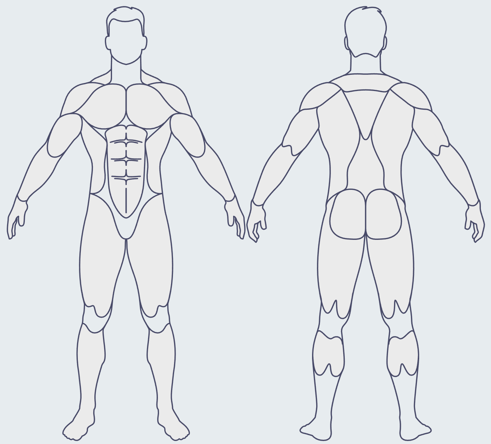

🛠️ เครื่องมือวาดกล้ามเนื้อ (Muscle Maker)
คลิกซ้ายเพื่อจุด > คลิกครบแล้วกดปุ่มเขียว > ก๊อปโค้ดไปใช้

แผงควบคุม
✅ จบชิ้นนี้ (สร้างโค้ด)
❌ ยกเลิก / เริ่มใหม่
ชื่อส่วนที่จะไป (เช่น chest):
โค้ดที่ได้ (Copy ไปใส่ index.html):